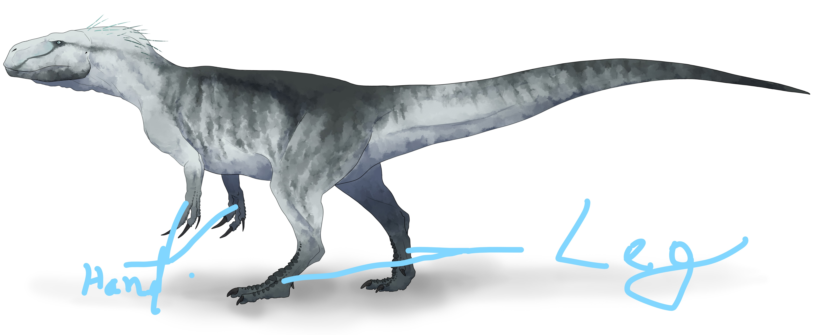
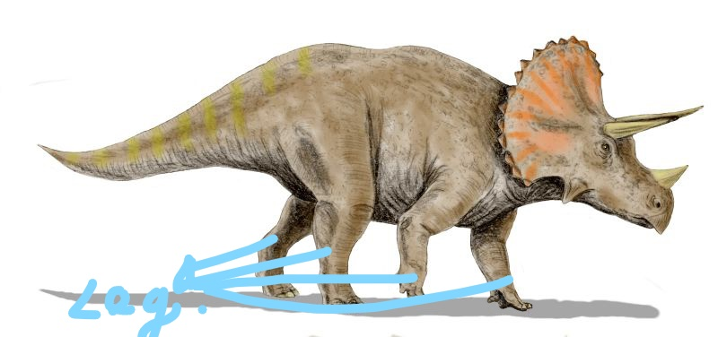
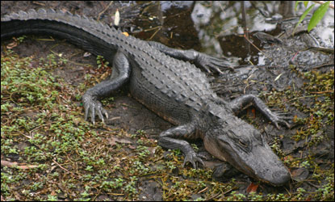
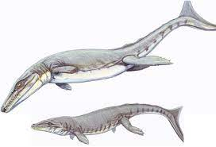

My game that I am working on it will be a 3D online game.
This game is bass on a Roblox game name Dinosaur Simulator but in my game there is many more than that game it while have New dino. In this game one server can hold up to 200 player.
I have a Youtube and roblox there link will be at the idk
Any way let move one to the points of my game things.
Game Concapet
This Game is bass on a dinosaur age . One day a metoroed fall into the Earth but it not extent dinosaur it form new spcices of animals but still human sevelisation grew and they where much stronger then nower people and at first you can only selact only normal dinosurs animals but people can capchur you and use as a wapon or they just kill you . now the dinosaur have growing system of max 10 mine and min 5 mine in real 1 by 1 age total age 100. It can take a lot of time so, the sarver will be 1 mointh 24/7 active. top
Comman this will be same in ever 2 lag dinosaurs are:

4 leg dino:
 and

Under water Dino:

wepon for human and animals
human :
The wapons are inpaerd from a Roblox game called Plague and I am the Co davaloper of Plague game .
Animals: